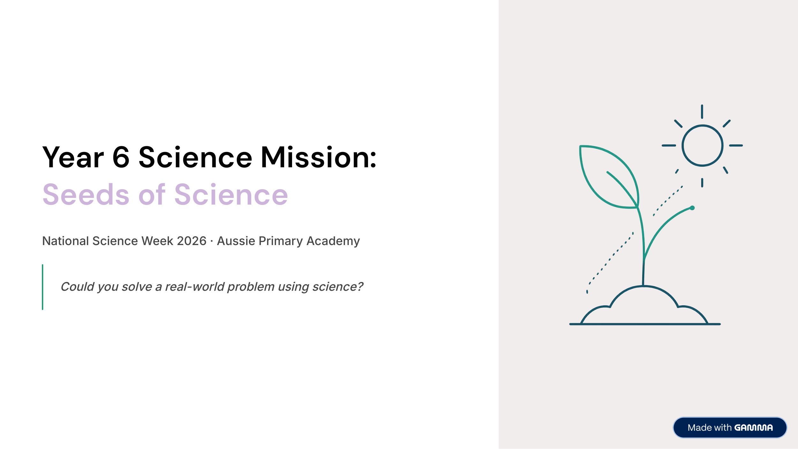

Year 6 · Science · National Science Week 2026 · Free Printable
Science Mission: Seeds of Science
Could you solve a real-world problem using science? This Year 6 mission pack builds inquiry skills through life cycles, shadows, heat and materials — and finishes with a genuine fair-test investigation.
Worksheet Preview

Preview of cover page · Full mission pack inside the PDF
Quick Facts
- Primary learning: Science · Inquiry skills + Science Understanding
- Year level: Year 6
- Theme: National Science Week 2026 — Seeds of Science
- Includes: Inquiry cycle · domain tasks · fair-test investigation
- Time: Flexible — full mission or individual pages
- Format: Colour PDF · multi-page pack
- Best for: Science Week, classroom rotations, science club, homeschool
About this worksheet
This Year 6 Science Mission pack is designed for National Science Week 2026 under the theme Seeds of Science: nurturing science for all. Students step into the role of scientists — asking questions, testing ideas, collecting evidence and revising their thinking.
The pack introduces the scientific inquiry cycle, then explores three Year 6 science domains: life cycles and survival, Earth–sun–shadows, and heat, energy and materials (conductors and insulators). It finishes with a mini investigation comparing which material best slows heat loss from warm water.
Activities are ready for whole-class Science Week, small-group rotations or home learning. Safety note: an adult should handle hot water during the insulation investigation.
Learning Intention
Students will use scientific inquiry skills to ask questions, identify variables, plan a fair test, collect evidence and explain findings about living things, shadows and heat transfer.
Curriculum Alignment
Supports Year 6 Science Understanding (Biological Sciences, Earth and Space Sciences, Physical Sciences) and Science Inquiry Skills.
Aussie Primary Academy is an independent publisher and is not endorsed by ACARA.
Skills Practised
- Scientific inquiry cycle
- Identifying independent, dependent and controlled variables
- Life cycles, environment and adaptation
- Shadows and the position of the Sun
- Conductors, insulators and heat transfer
- Fair-test design and evidence-based reasoning
Teacher / Parent Notes
Use as a full Science Week mission or select individual domains (life cycles, shadows, or heat). The insulation investigation needs adult supervision for hot water.
Suitable for mainstream Year 6, tutoring and homeschool programs across Australia.
What’s inside the pack
- What is National Science Week? — theme, how science works, student role
- Scientific inquiry cycle — question, hypothesis, fair test, variables (with plant-growth example)
- Domain 1 — Life cycles & survival — stages, environment, adaptation + comparison challenge
- Domain 2 — Earth, Sun & shadows — why shadows change through the day + reasoning challenge
- Domain 3 — Heat, energy & materials — conductors vs insulators + real-world problem
- Science in the real world — environments, energy, materials, living things, technology
- Mini investigation — which material provides the best insulation? (fair-test procedure)